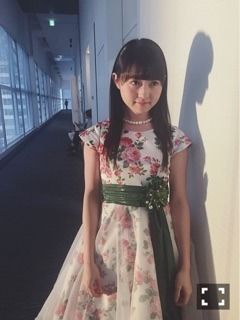
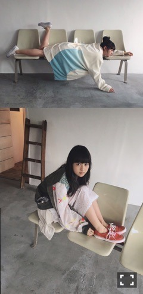

| 2016/12 23 Fri | 愛しい闇。753回目 |
昨日ZIP!できっかけ生披露しました！
朝日浴びてるよー
こないだのライブでも着た衣装だーよー
今日はMステスーパーライブ出演します。
...
プライベートでは最近、
マームとジプシー「ロミオとジュリエット」
観劇しました。
人と音楽と映像と壁とファッションと
あの空間すべて、どこを切り取っても
夢を見ているみたいだった。
DOUBLE MAISONの衣装に
YUKI FUJISAWAの装飾したドレス！
全員で舞う姿、、
カーテンコール一列に並んだ時、
一着一着しっかりと見たくて
目をかっぴらいて前のめりになったくらい
みなさん本当に美しかった。
前作の「書を捨てよ町へ出よう」
も観てたのですが、
mina perhonenを纏っていたなあ
素敵だったなー、、

BRODY

Street Jack
12月27日 装苑
12月29日 月刊エンタメ
12月31日 日経エンタテインメント！アイドルSpecial2017
B.L.T.グラビア大賞
blt graph. vol.13
さりげなーく2位で嬉しかった！
ロングインタビューとか気持ち的にも
特別だったけど、もっと特別になった〜

こないだの名古屋握手会はほぼサンタ！
衣装さんの作ったサンタ。
私はポンチョタイプでした〜
5年に一度のコスチューム。
メリクリいいいいい！！！！！！！
まりか
コメント(556)
2016/12/23 10:40